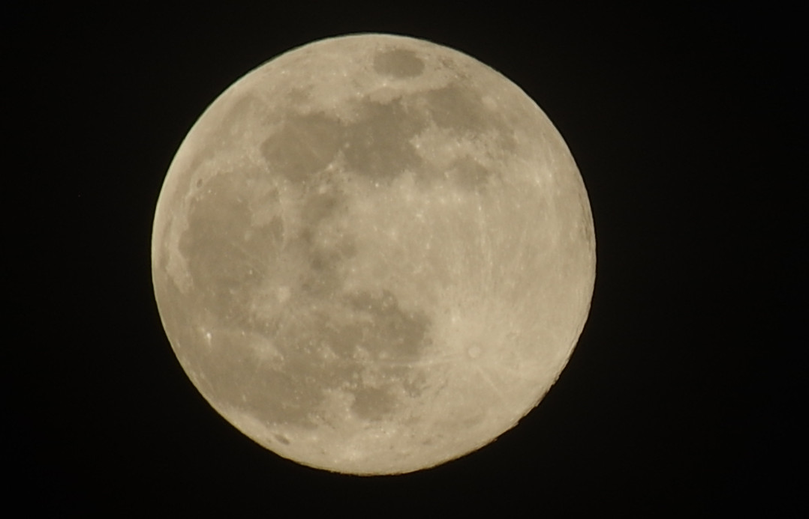
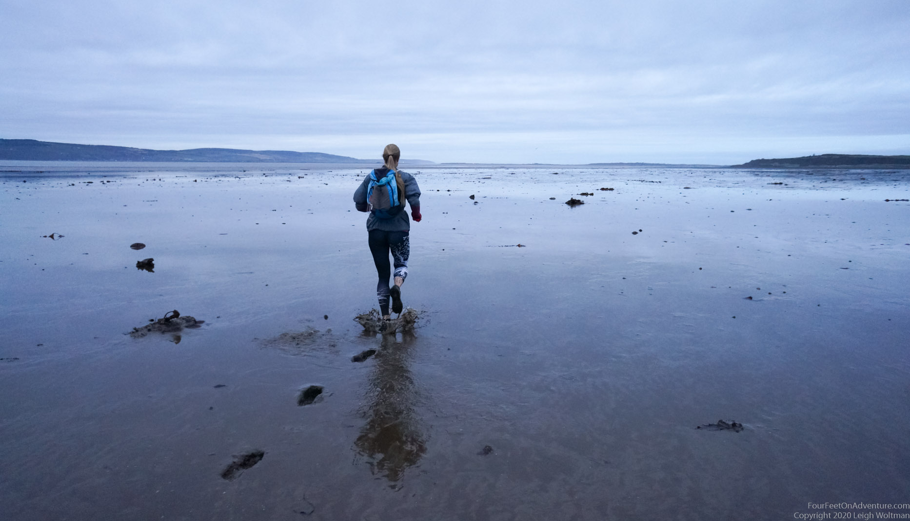
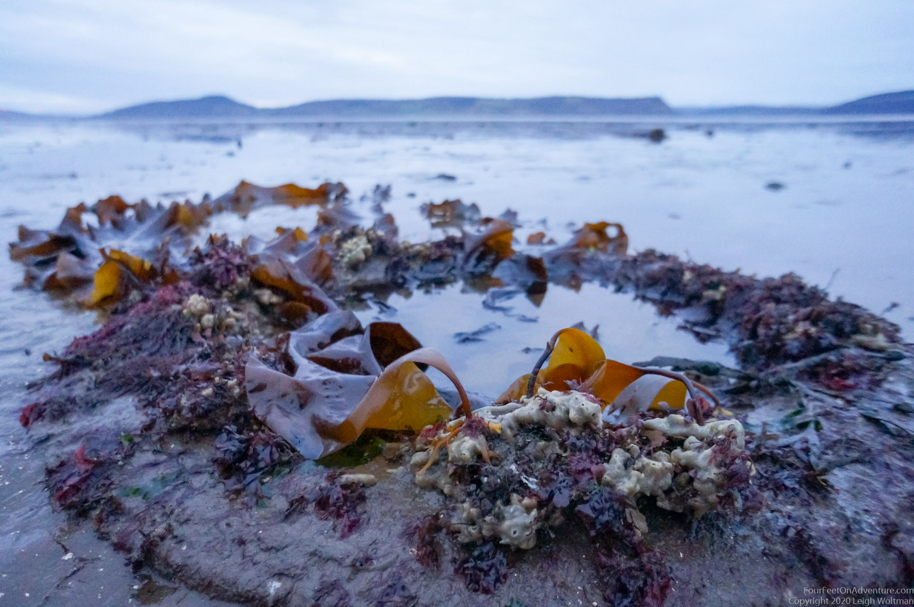
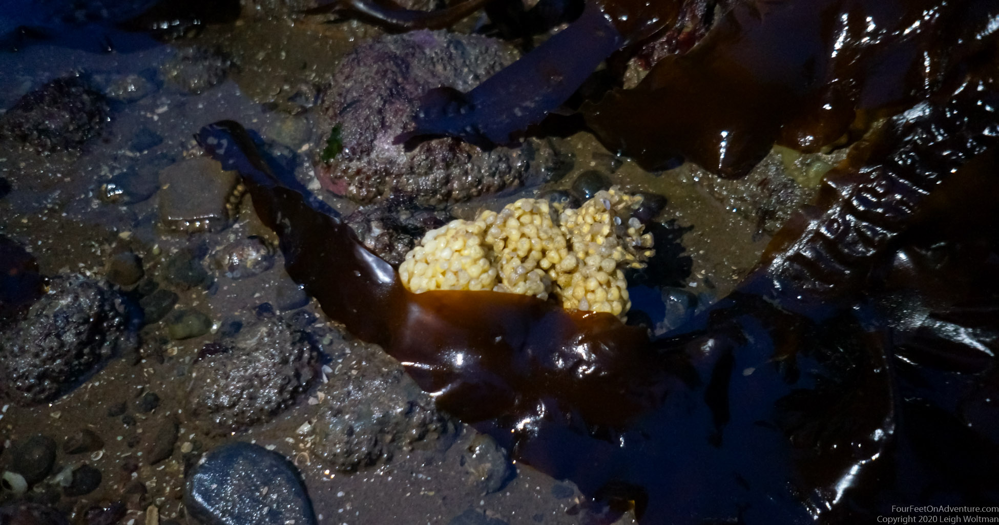
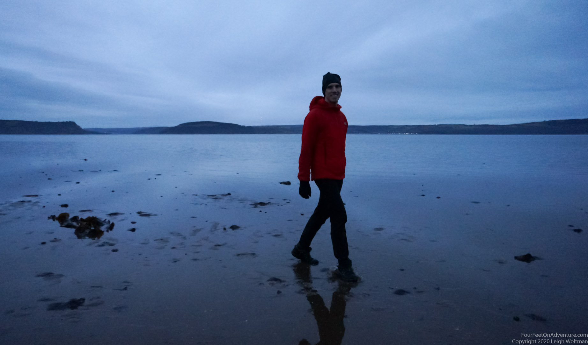
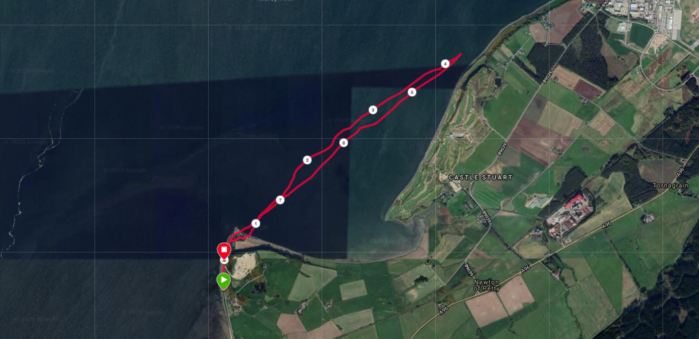

Email Us
Please send us an email, we would love to hear from you!

The amazing supermoon, that we could see peaking through the clouds, had lots of people on their toes taking pictures and getting up at night. The moon was so large, because it was close to the earth. In fact, it won’t be this close until March in 2024. The moon's gravitational pull causes tides to go up and down, so when the moon is so close, it's definitely a good time to have a look at the tide table. Normally you have small tides and large tides, meaning they don’t always come up to the same level. This has to do with the moon, but with many more things as well. We did have a look at the tide table, and found out that the tides are massive for this region, a bit over 5 meters, depending on the source we were looking at. Later this week, there will be only a 1.5 meter difference between high and low tide, just to give an idea of how much variation there is in a short time.

(photo by Frank Boerlage)
So, why is this interesting? At high tide the water comes so high that you can almost step in your kayak from the road. But at low tide, the water is so low, that you can run through what normally is the ocean bottom. Run where the bottlenose dolphins swim! Explore the kelp forest floor. Stand where we normally kayak. Explore something new, right at the doorstep.

The lowest of the lowest tide was just before sunset, so we took off a little before that. We had our running gear on, headlamps with us, and of course some Easter eggs, to celebrate that it was almost Easter. Off we went to Alturlie point, just at the end of our road, from there, it was into the mud. Close to shore was the most muddy, but it wasn’t bad, maybe we sank in about 5 cm. It was a bit stony to begin with, but further out it cleared and the bottom was mainly sandy. The bottom wasn’t completely flat, so sometimes we would be running dry, and sometimes in a few cm of sea water. Incredible how far we could go out! We ran further and further, stopping every now and then to have a look around. We found sea shelves of many varieties such as clams and oysters. Sometimes we passed by a large rock, on which sea weeds had taken residence to form beautiful secret underwater gardens, which we could now explore and look at.

Further we ran, enjoying the peace and freedom of the open landscape, quiet except for the sounds of birds getting ready for a good night sleep. We ran all the way to the golf course where the main current comes close to shore. There we found some more interesting features, and explored the sponges that grow near the roots of the kelps. Kelps are amazing, sometimes they are meters long but attach only to a cubic cm size rock to hold them to the bottom. We also found a white substance that looked a bit like plastic foam, but turned out to be empty shells of the common Whelk, the largest snail species that roams these coastal waters.

Having had a rest and eaten some Easter eggs, we turned 180 degrees and made our way back towards home over the now dark tidal flats. The water was coming up already, so that more spots than before were under water, but just maybe 0,5 cm. We felt like we were running on top of the water, and it was pure enjoyment. Because of the increasing darkness it wasn’t always clear if the sand we were running on was not going to randomly end and there would be a deep gap to get onto the next one, so a few times it felt as if we were running straight out to sea, but we always managed to keep going without getting more than 10 cm of water between our shoes and the bottom.

We just had the light of the stars, but that didn’t matter because the bottom was fairly flat. We managed to get back to shore and walked most of the last bit home, still feeling quiet and peaceful and trying to keep the magic of the twilight adventure with us for as long as possible.

Please send us an email, we would love to hear from you!